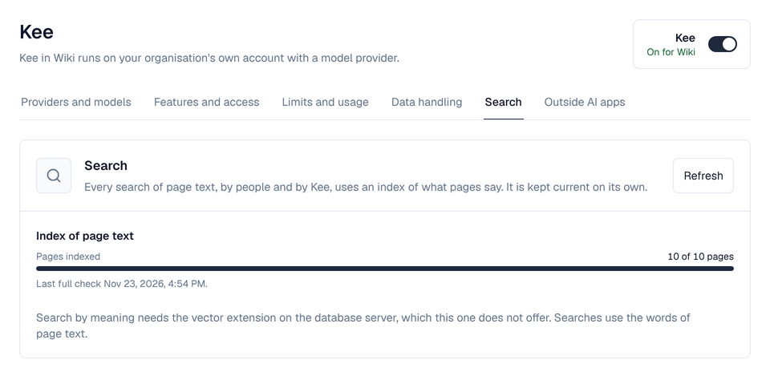

Every search of page text, by people in the search box and by Kee, uses an index of what published pages say. It is built and kept current on its own. On top of it, search by meaning lets Kee also find passages that say the same thing in other words. It is optional and needs a database extension and an embeddings model.
1. Where it is
Settings → Kee → Search (Manage Kee settings, Pro). The tab shows the index of page text and, where the database offers it, search by meaning. It reads its numbers when you open it and on Refresh; it doesn't update by itself.

2. The index of page text
- It holds the text of the newest published version of every page, as Kee reads it (up to about 200,000 characters a page). Drafts and earlier versions aren't in it.
- It follows every change within about a minute, on every server. After an upgrade, the first pass fills it in the background: Pages indexed shows how far it is. A page not indexed yet is still found by its title.
- It is used by the search box (results In page text, see Search) and by Ask Kee, agents and outside AI apps (search_pages).
- Every search is filtered by the person's access before anything is ranked: spaces they can see, published pages, page locks.
- It needs nothing from you and no extension.
3. Search by meaning
With search by meaning on, each page is cut into passages (by headings, then paragraphs, up to 40 a page) and each passage gets a vector from an embeddings model at your provider. When Kee searches, it also finds the passages closest in meaning to the words it searched for, and mixes them with the word matches.
| It needs | Details |
|---|---|
| The vector extension in the database | The PostgreSQL server must offer the vector extension (pgvector), and a database administrator must install it in the Wiki's database: CREATE EXTENSION vector;. The Wiki never installs it. The server checks whether it is offered when it starts: restart it after installing the extension's package on the database server |
| An embeddings model | Added under Providers and models with the kind Embeddings, from a provider that has an embeddings endpoint. See Providers and models |
| Its switch | Search by meaning on this tab (also in the Scheduled help card). Off by default |
| A budget | It runs as scheduled work: the monthly budget for scheduled help pays for it, not people's limits |
| Licence | Pro |
- Ask a database administrator to install the vector extension in the Wiki's database (CREATE EXTENSION vector;), then restart the Wiki's servers if the package was just added.
- Open Settings → Kee → Providers and models and add an embeddings model.
- Open the Search tab. Under Search by meaning, turn the switch on.
- Choose the Embeddings model and confirm with Continue: the text of every page that may have vectors is sent to that model's provider.
- Watch Pages with vectors grow, with Refresh. While it runs, searches use words and the vectors made so far.
4. What the tab shows
| State | Meaning |
|---|---|
| Not available | The database server doesn't offer the vector extension. Searches use the words of page text |
| The extension is offered, not installed | The tab says a database administrator installs it. Until then searches use words |
| Off | The switch is off. Searches use words |
| No model chosen | Choose an embeddings model. Searches use words |
| Making vectors | Pages are being sent. Searches use words and the vectors made so far |
| Ready | Searches by Kee use words and meaning |
| Stopped for now | The tab says why: the scheduled budget is spent, the model is paused or gone, the provider didn't answer or refused, a policy refused it. It goes on by itself at the next run where it can |
- Also shown: pages with vectors and passages, the vector length, tokens sent so far and the estimated cost (from the model's input price).
- Choosing another model asks first: the old vectors are removed and every page is sent to the new model again. None stops search by meaning and removes the vectors.
- A model paused under Providers and models shows Paused and stops the work.
5. Without it
Nothing breaks. Whenever any part is missing (the extension, the model, the switch, the licence, the budget or the provider), Kee searches by the words of page text, the same as before it was set up, and nothing is sent.
6. What is sent
- The text of published pages, cut into passages: never pages under a page lock, and nothing of a space where Kee is off. Vectors of a page are removed when it is deleted, locked, or its space turns Kee off.
- The words of each search Kee makes, to find passages close to them. These count against the scheduled budget too.
- Nothing of what people type in the search box: it searches words only.
7. Events, audit and jobs
| What | Details |
|---|---|
| wiki.search_settings.update | Raised before and after the switch or the model changes; a policy can refuse it. Audit wiki_search:update_settings |
| wiki-page-search-index | Every minute: keeps the index of page text current and fills it after an upgrade. Run now under Settings → Scheduler |
| wiki-page-search-embed | Every minute: makes and removes vectors while search by meaning is on |
8. Limits
- There is no approximate vector index: a search compares every passage the person can read, which is fine for most wikis.
- Kee's own searches use meaning; the search box uses words only.
- The switch here and the one in the Scheduled help card are the same setting; the other tab shows a change after you reload it.